Mario Guzman
Artist-researcher and
creative technologist
Berlin / La Rochelle
I make installations, robots, texts and open tools about artificial entities: who is speaking when a machine speaks?

Artworks
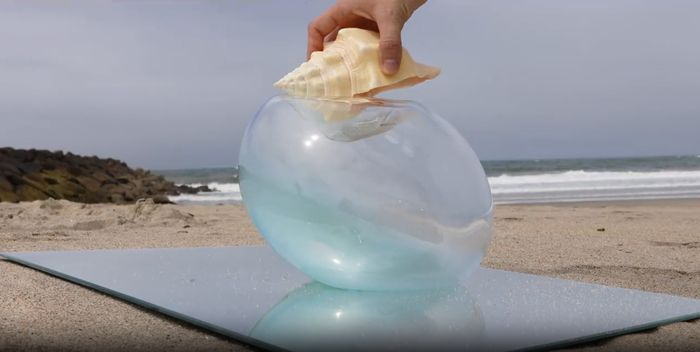
She Tells, Sea Shellswith Helin Ulaş and Rita EperjesiS+T+ARTS Aqua Motion showcase, UNESCO Venice Office 2024
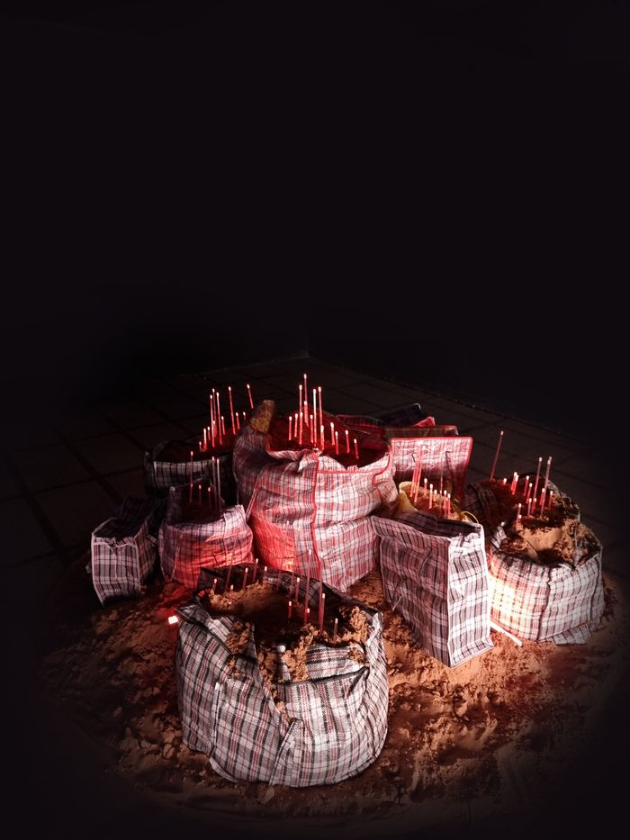
Liminal Sanctuarywith Agustín Ramos AnzorenaXV Biennale of Contemporary African Art, Dakar 2023Entangled Matter: AI, Humans and GolemsFestival ZERO1, La Rochelle
NeurIPS 2026 Creative AI Track 2021–25
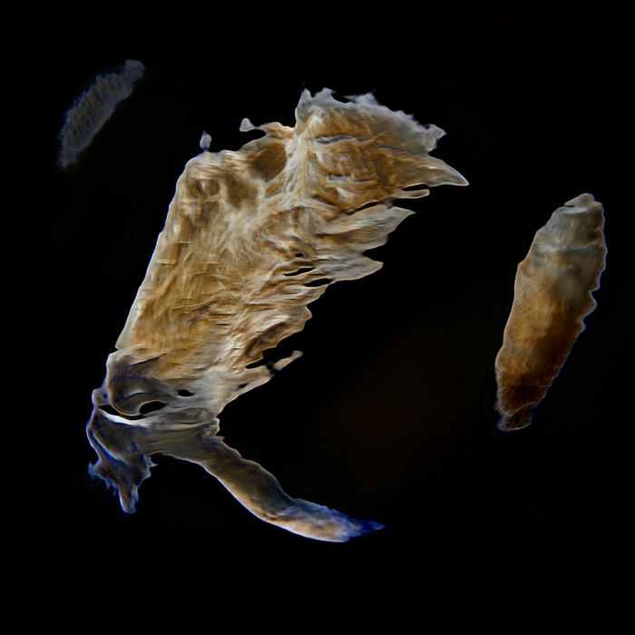
AI Seeds / Aerodynamics of SeedsBIENALSUR, EcuadorFACTO 11, Brazil 2022Consciousness Is the Precooking of the Universal MindLatin American Artificial Intelligence Biennial, Mexico 2015
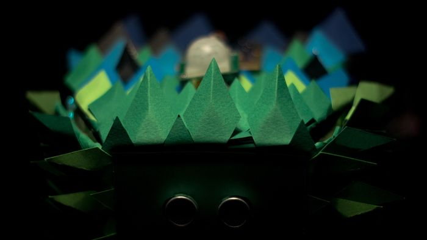
Quetzalcóatl-bot. Between Code and CodexInstallation and New Media Award, 105º Salón Nacional, Buenos AiresAlso
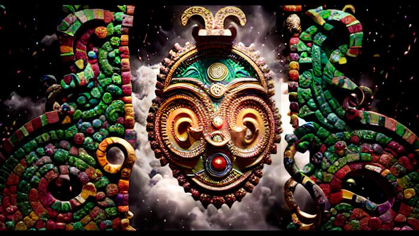
Cenote ReflectionsAI Robot Roadshow, AI for Good Global Summit 2023, Geneva 2020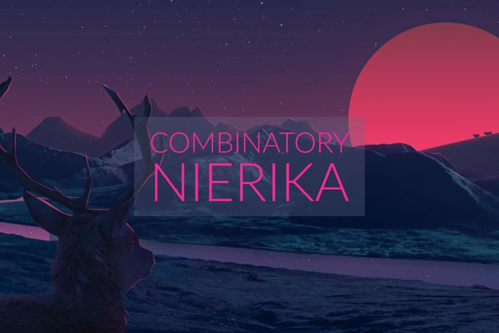
Combinatory NierikaTaper #5 · POSVERSO 2026 2020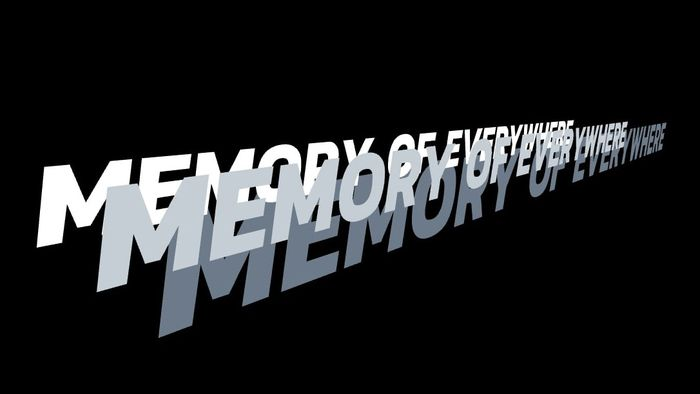
Memory of EverywhereELO (Un)Continuity, Orlando 2019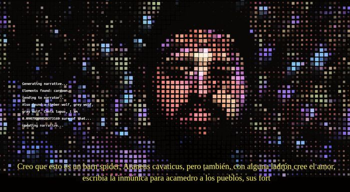
Learning to WriteGame On!, Centro Cultural San Martín · Mixed Feelings, School of Machines 2018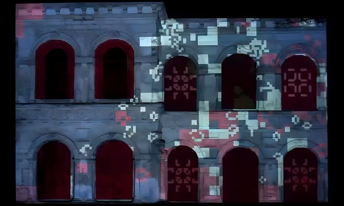
Machine de transcodage bit-celluleZERO1, La Rochelle 2016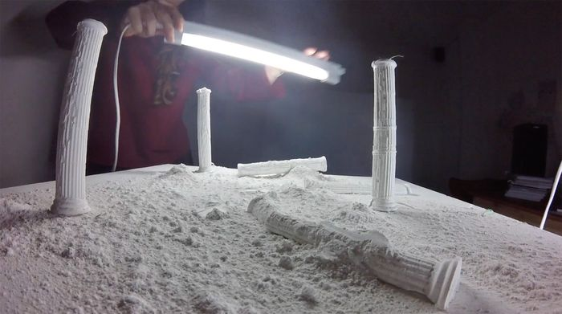
Ped. Deneoclassified Electromagnetic PoemCentro Cultural Kirchner 2016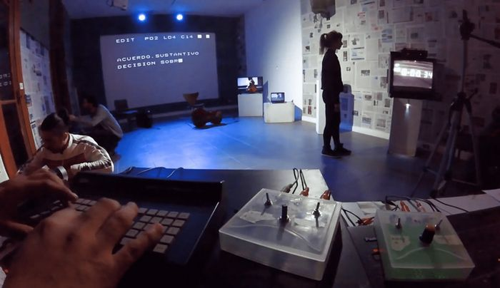
The Last AgreementCasa del Bicentenario 2015–16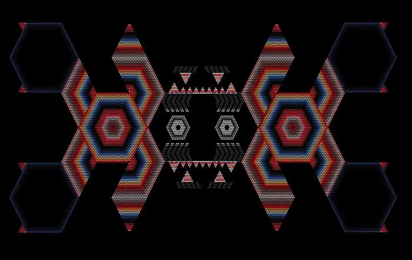
Temazcalli-DomePlanetario Galileo Galilei · BIENALSUR 2015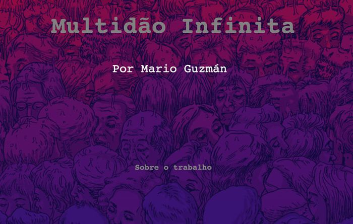
Discrete InfinityItaú Digital Story Award anthology 2014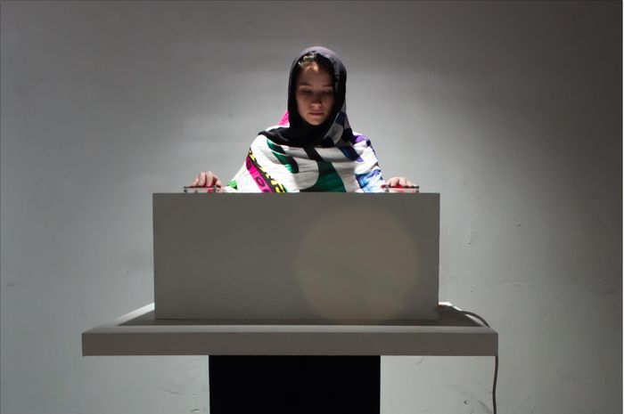
Generative Oracle. From the Pulse to the LetterYouth Art Biennial 2014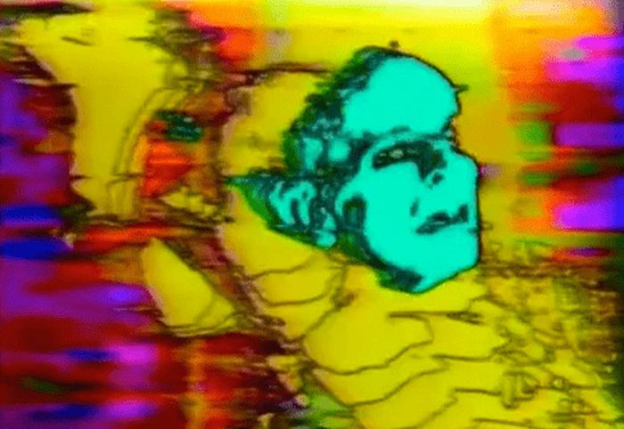
Pre-pixel Symphony in Major Fractal I 2013–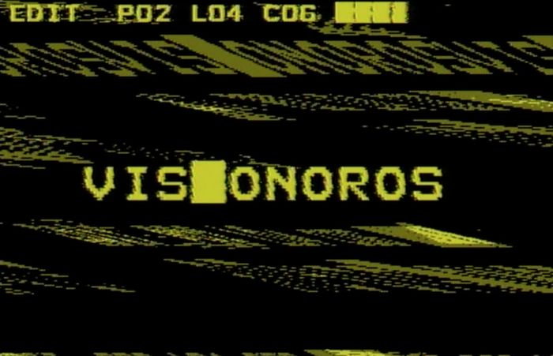
Visionoros CollectiveVHS and electronic music performanceHumanoid robots
Interaction design for the humanoid robots Sophia and Desdemona, 2018–2026, across Hanson Robotics and SingularityNET: what they said, how they moved, how they were shown. Also the empirical core of my PhD.
Sophia
Hanson Robotics, Hong Kong, 2018–2022. Main operator. I developed her speeches and performances and did the art direction for many of her presentations.
Videos: Stream of Consciousness: Awakening · A Stream of Consciousness About Nature.
Desdemona
SingularityNET, 2021–2026. Dialogue writing and live operation.
Videos: Hypersensual Overclocking: Making Machines Feel · Desdemona at the Vatican.
Creative technologist
Commissioned work where I designed and built the technology.
Workshops
Texts
PhD thesis in progress at La Rochelle Université: Voicing Artificial Entities: Semiotics and Cultural Narratives in the Development of AI and Robot Persona and Personalities.
About
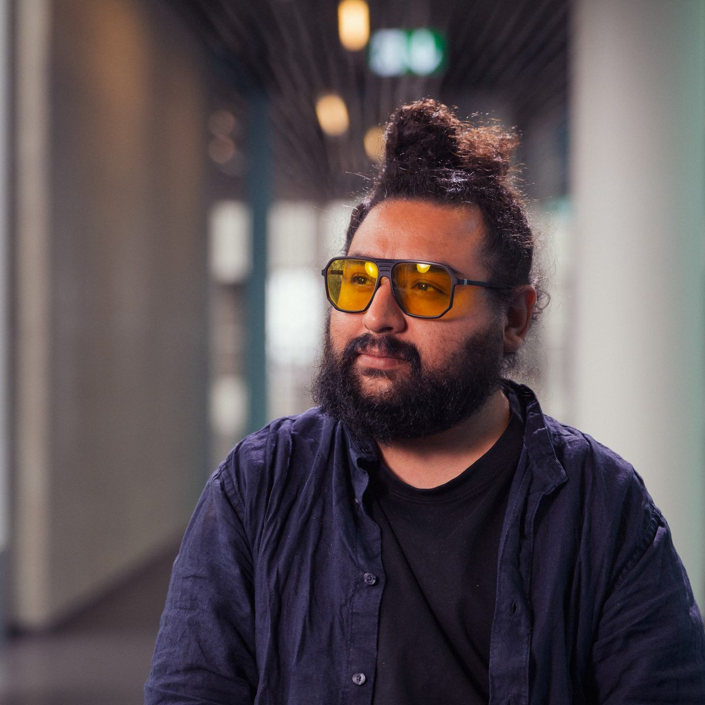
Mario Guzman is a Mexican creative technologist and PhD candidate at La Rochelle Université, where he researches the semiotics of artificial voice and machine personas. For eight years (2018–2026) he operated the Sophia and Desdemona robots across Hanson Robotics and SingularityNET, writing dialogue, programming gesture, and staging live demonstrations.
He is a mentor at the School of Machines, Making & Make-Believe in Berlin, co-founded the Imagined Tech Studies collective, and is the Spanish i18n Steward for the Processing Foundation's p5.js. His work has been shown at Festival ZERO1, BIENALSUR, and the Dakar Biennale.
Available for talks, workshops and commissioned work. Write to me